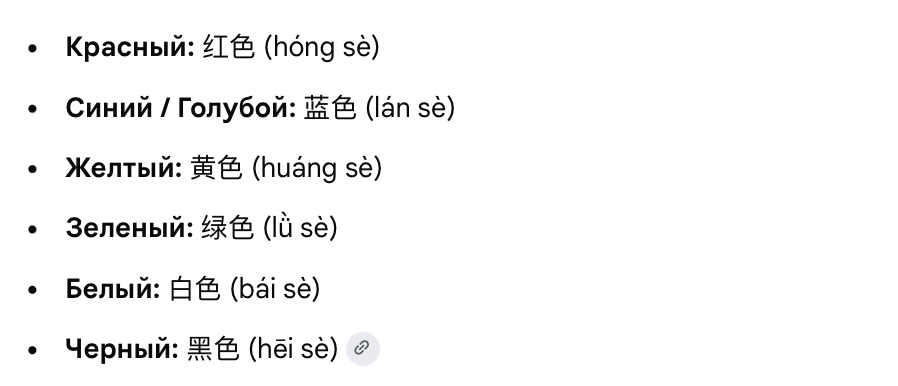

«В мир китайского языка» — вводная презентация
Презентация к первому занятию: зачем учить китайский и что даёт язык.
Презентации и тест на определение уровня
Если файл не открывается — выключите VPN. Материалы хранятся на Яндекс Диске, а Яндекс часто не пускает подключения через VPN.
Презентация к первому занятию: зачем учить китайский и что даёт язык.
Узнавание иероглифов, их значения, чтение коротких предложений и текста, устный ответ.
Символика чисел в китайской культуре: 4, 8, 6 и 520 — как звучание меняет смысл.
История праздника, флаг, герб и гимн с разбором текста, торжества и «золотая неделя».
